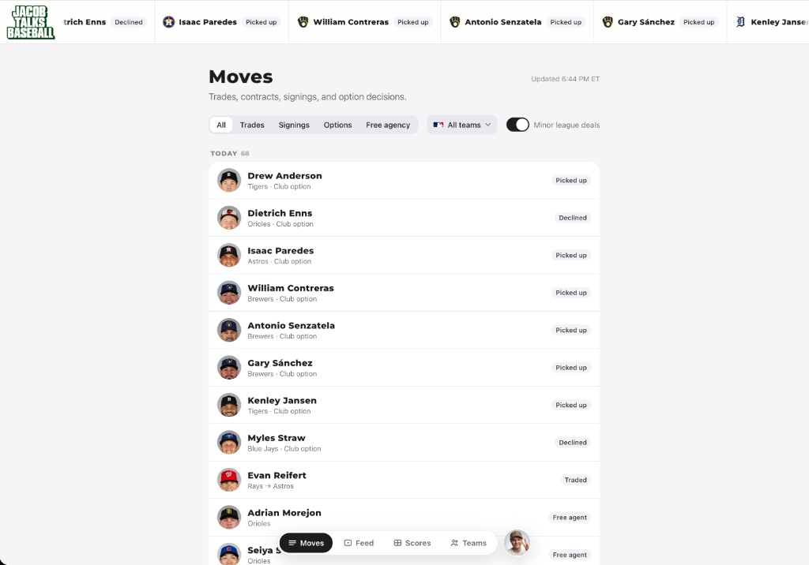
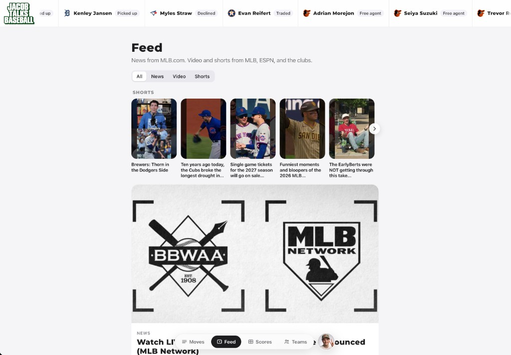
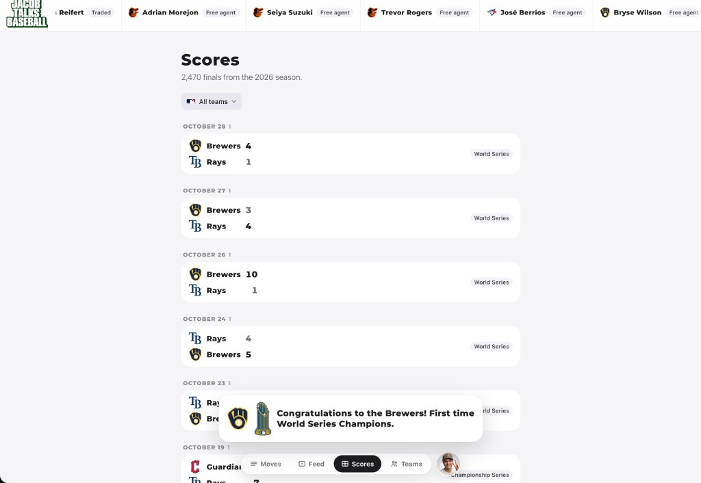
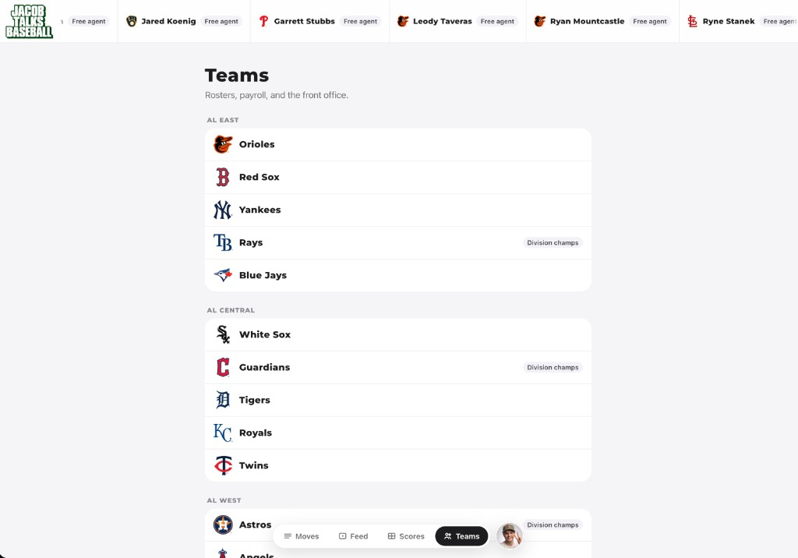
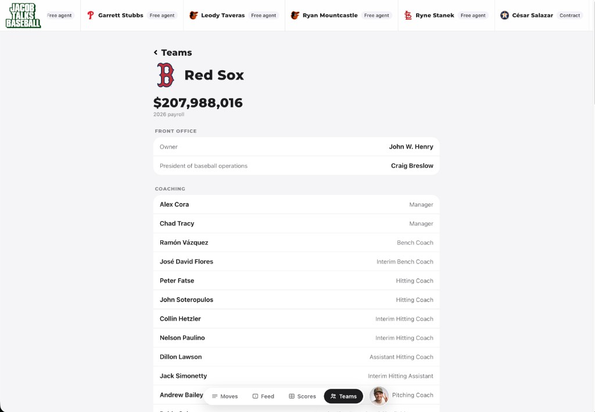
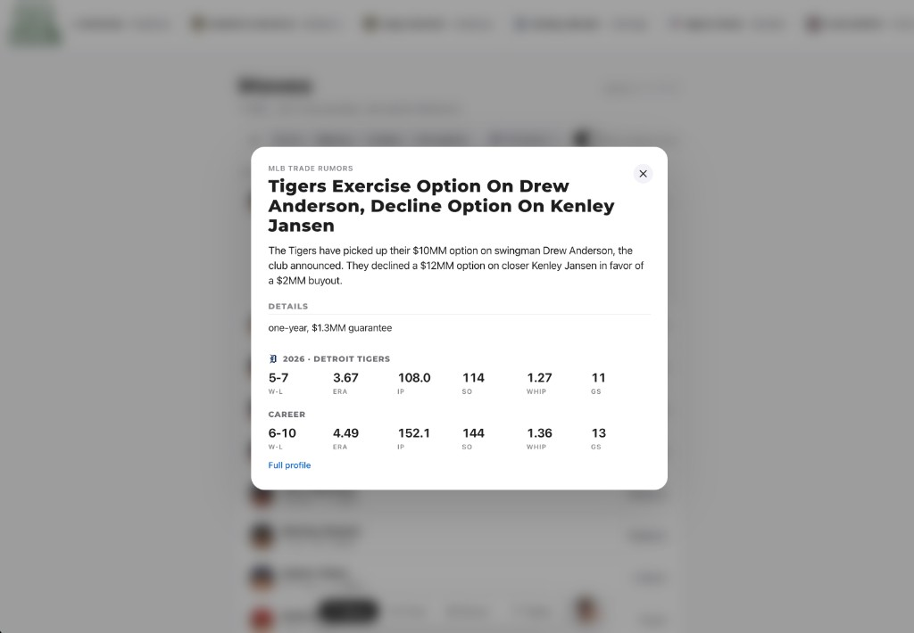
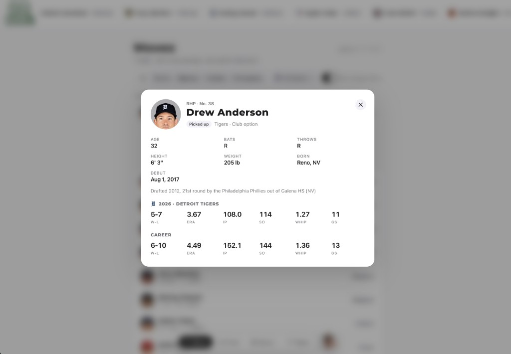
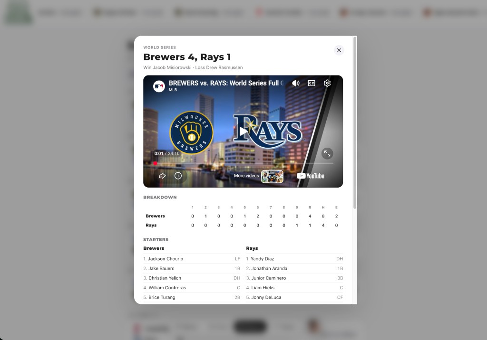
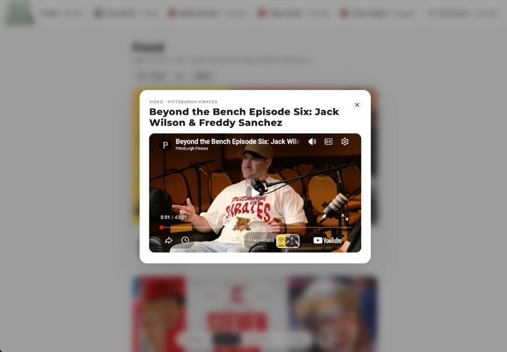
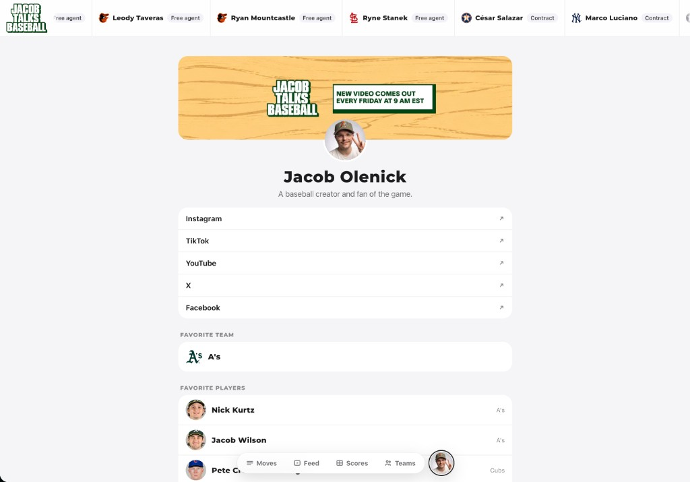

An MLB website for fans
Jacob Talks Baseball — a fan-first site for trades, scores, teams, news, and highlights in one calm, readable experience.
Product design and design engineering from concept through build
Moves, Feed, Scores, Teams, and creator link-in-bio

Overview
I designed and built a website with information for fans to see when trades happen, check scores and highlights, and dig into teams, payroll, and front offices — without the noise of a typical sports portal.
The product lives under the Jacob Talks Baseball brand: a live transaction ticker, filterable moves feed, news and video feed, historical scores, and team directories with detail pages. I was the Lead Product Designer and Design Engineer, owning UX, visual design, and implementation.
My Role
Lead Product Designer & Design Engineer
- End-to-end product design — IA, flows, components, and responsive layouts
- Design and build of Moves, Feed, Scores, Teams, and link-in-bio experiences
- Player and news modals with stats, breakdowns, and embedded video
- Navigation model with persistent bottom bar and transaction ticker
Moves
Trades, signings, options, and free-agency updates in one scannable feed — with filters by move type, team, and minor-league deals, plus expandable cards for full context and links to reports.

Feed
News, video, and Shorts from MLB and clubs — tabbed filters and a Shorts row for quick highlights alongside full article cards.

Scores
Final scores grouped by date, team filters, and celebratory moments like championship callouts when a season ends.

Teams
Every club organized by division, with team pages for payroll, front office, and coaching staff.


Detail modals
Deep dives without leaving the page — trade rumor write-ups, player profiles with career stats, game recaps with line scores and starters, and in-feed video playback.




